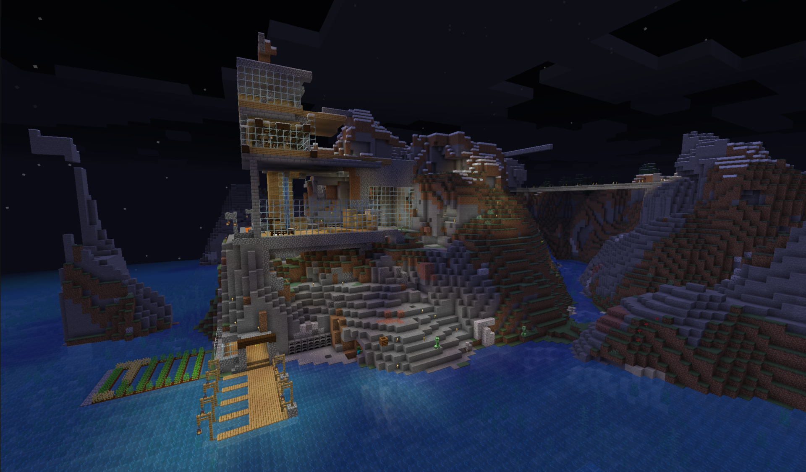
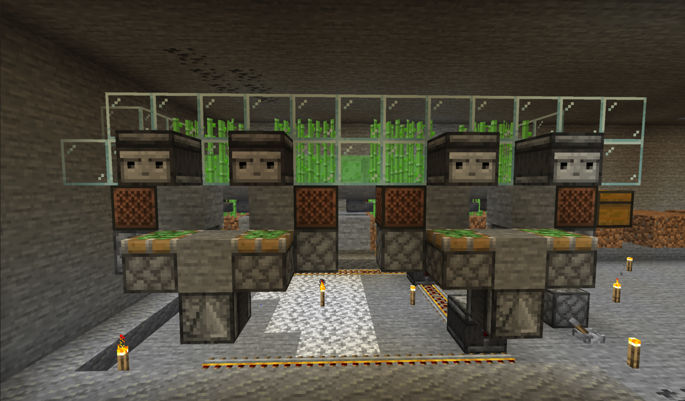
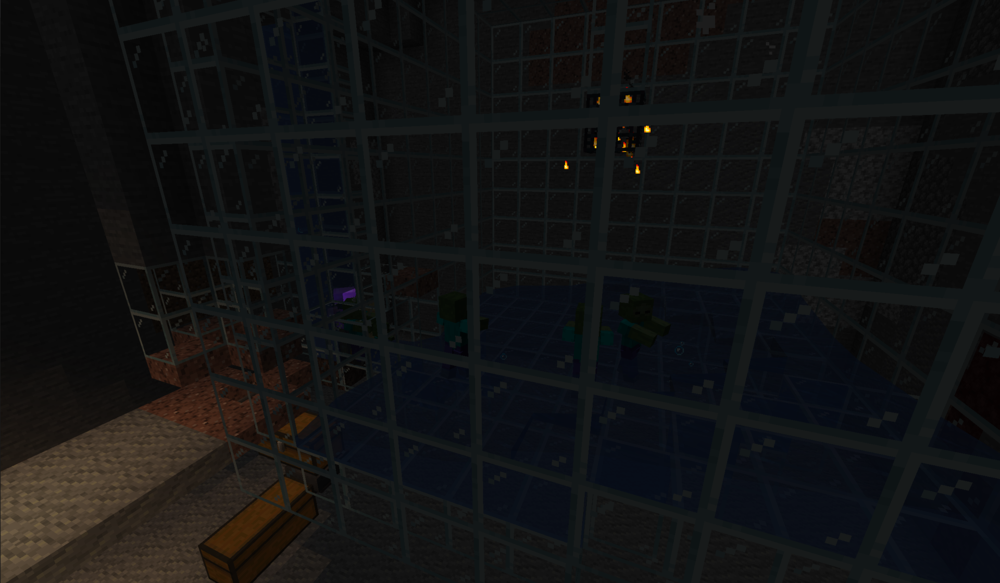
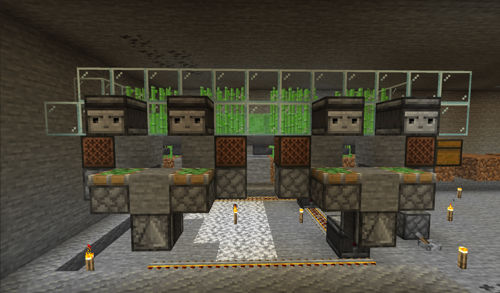
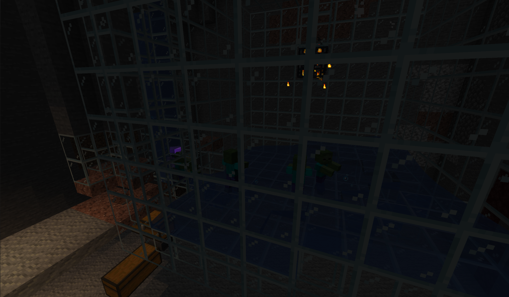
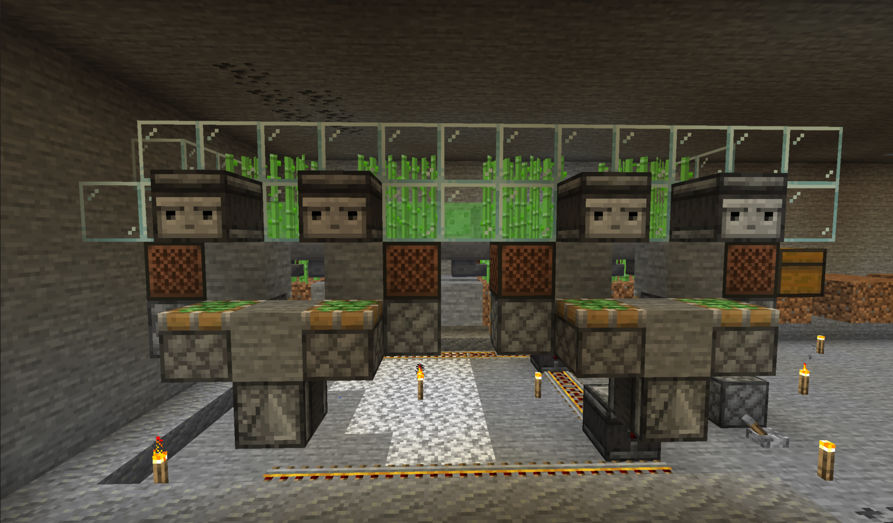
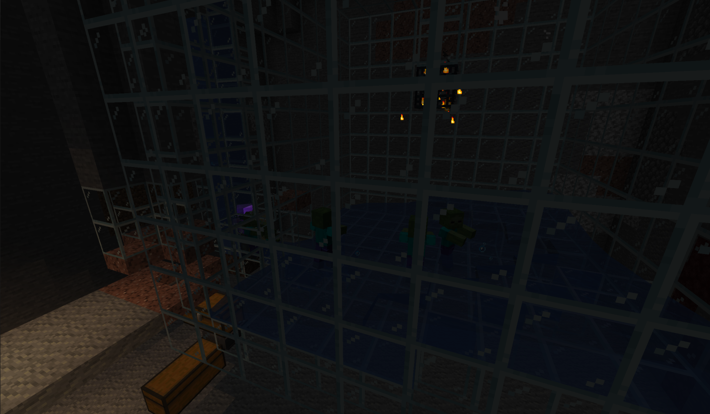

Version: 1.15.2
Para jugar descarga el juego y conéctate usando:
minecraft.jediupc.com
Hasta 128 jugadores simultaneos
Una iniciativa de JEDI Junior Empresa
Motivación
El objetivo de este servidor es pasarlo bien durante estos días de confinamiento con los estudiantes de la FIB y los miembros de JEDI. Es un servidor multijugador con plugins en modo supervivencia.
¿Cómo entrar?
En el menú principal, accedes a la opción "Mulijugador" y añades un nuevo servidor. Especifica la IP como minecraft.jediupc.com.
Link copiado!
Cosas a destacar
Para hacer el gameplay más interesante, hemos añadido muchos plugins originales, entre los cuales podemos destacar ...
- LandClaiming: puedes proteger tus tierras!
- Dynmap: puedes ver en vivo lo que está pasando en el mapa!
- SetHome: puedes crear, borrar y teletransportarte a todas tus casas!
- MarriageMaster: puedes casarte! (= Compartes inventario)
Lista completa de plugins disponibles
- AUpdater
- DeadChest
- DependencyDownloader
- Dynmap
- HolographicDisplays
- LandClaiming
- LoginSecurity
- MarriageMaster
- Multiverse-Core
- NametagEdit
- PlugMan
- PluginConstructorAPI
- PluginMetrics
- SetHomes
- Shopkeepers
- Timber
- Vault
- WorldBorder
- WorldEdit
- WorldGuard
- bStats
Lugares emblemáticos

 





Si quieres presumir de tu lugar emblemático y que aparezca aquí, cuélgalo en RRSS mencionando a JEDI!